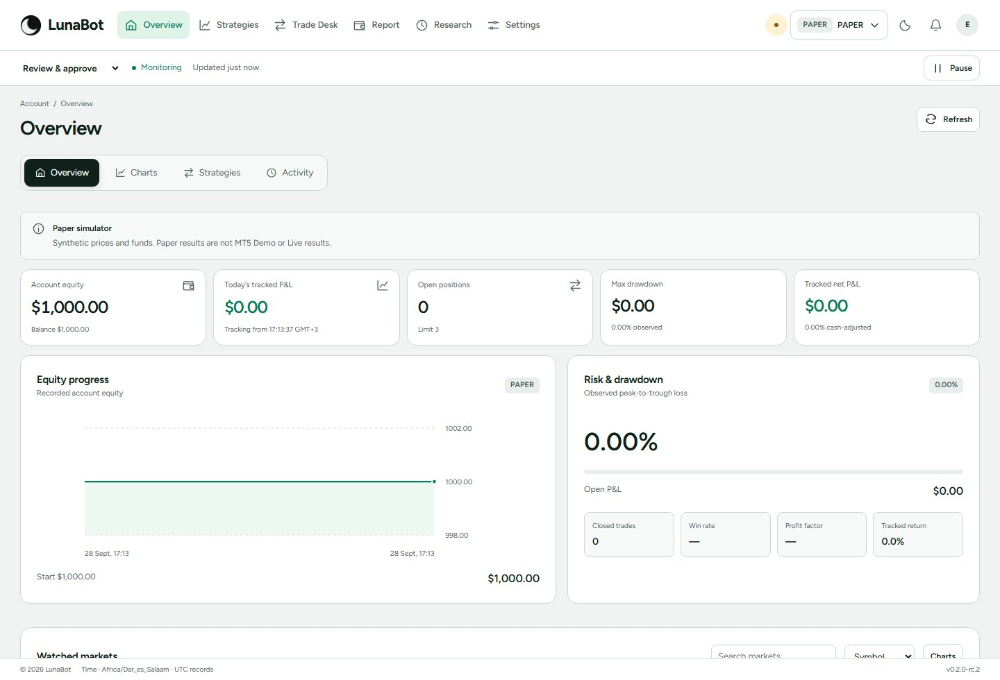
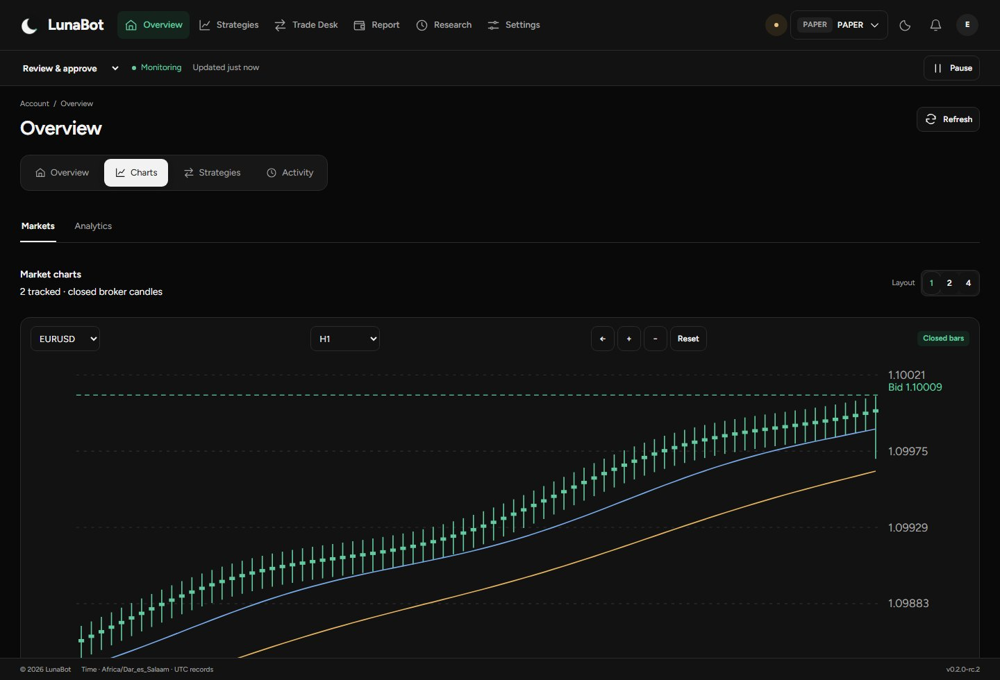
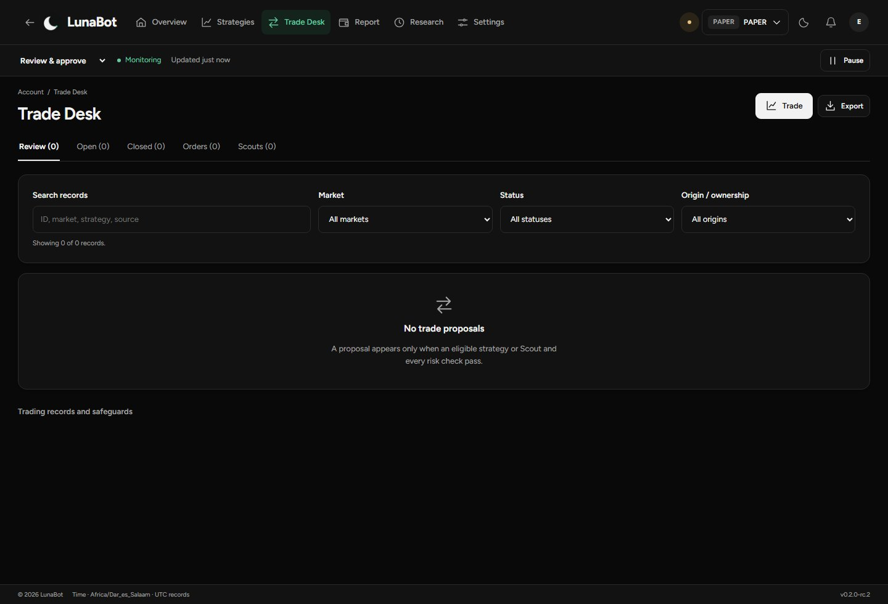
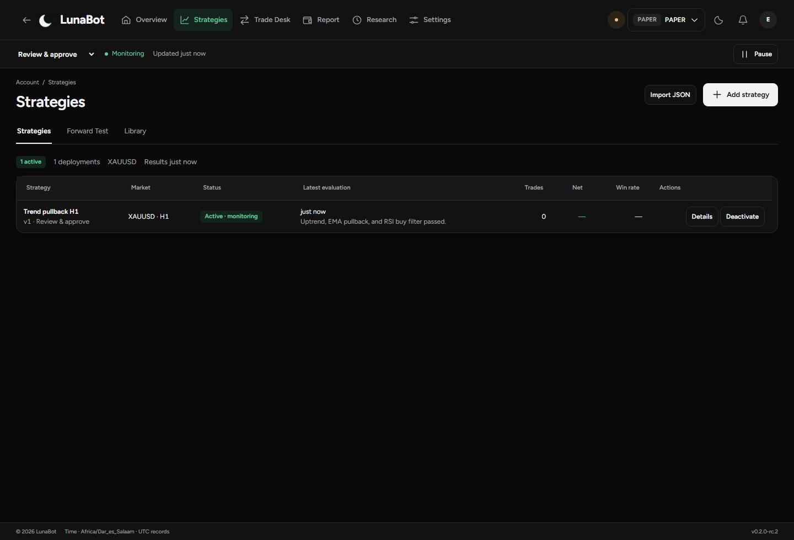
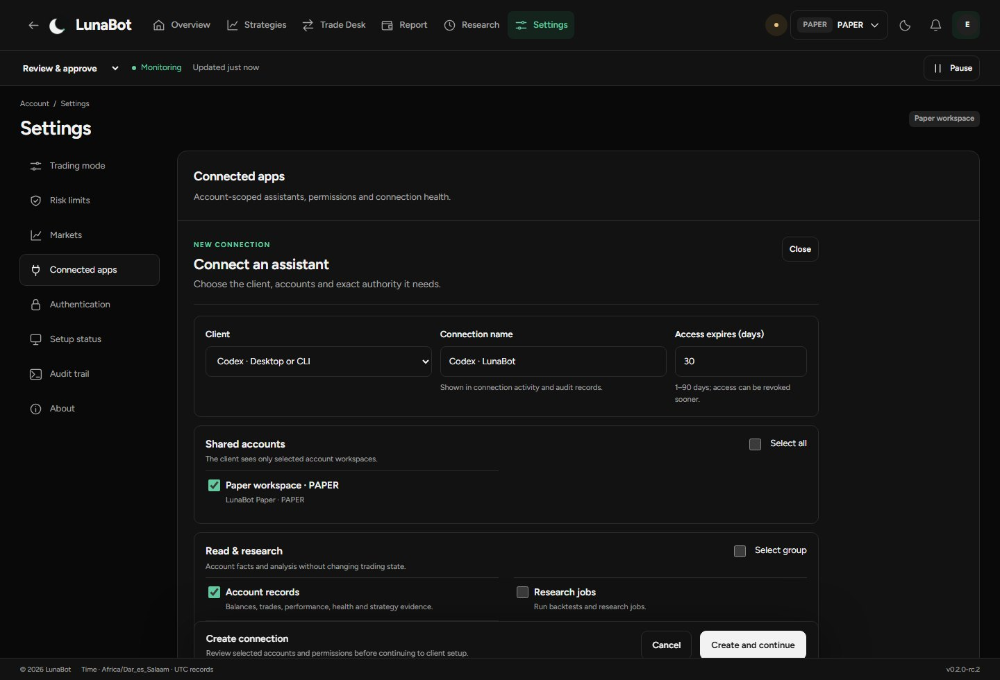
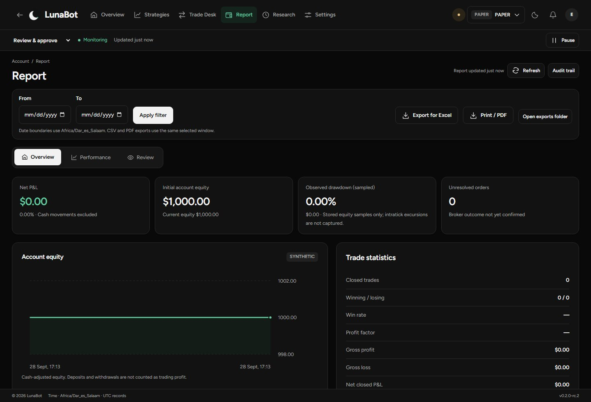

A practical walkthrough from first launch to the account record. Screens below use the actual interface with a disposable Paper simulator. All prices, balances and examples are synthetic, not broker performance.
01 / First launch
Install, then choose your environment.
Download LunaBot_0.2.1_x64-setup.exe and SHA256SUMS.txt from the official public release. Use Windows x64.
In PowerShell, run Get-FileHash .\LunaBot_0.2.1_x64-setup.exe -Algorithm SHA256 and compare the complete hash. The installer is unsigned. Do not disable Windows security protections.
Run the installer. A calendar-month offline trial starts on the first successful launch, not on download.
Choose Paper to learn with synthetic data, or MT5 Demo to connect a broker demonstration account. Select the exact terminal, server and account. Never share a broker password in an issue or email.
Confirm your timezone, mode, strategy market and risk limits. Start monitoring only after connection and reconciliation complete.
Existing installations retain their settings, records and protected licensing identity. An update is not a clean-account reset.
02 / Account review
Start with what is running.
Overview shows account equity, tracked profit and loss, open exposure, watched markets, active strategies and current Scouts. Check the selected account and freshness before treating any value as current.
Observe: watch records without submitting entries.
Review: eligible proposals require your approval.
Automatic: eligible entries can be submitted under saved permissions and checks.
Monitoring and permission to trade are different. Pausing new entries is not the same as disconnecting or stopping the terminal. Inspect the active status and configured pause behaviour.

Overview / light theme / simulated account, no broker returns.
03 / Market analysis
Choose the market and the time scale.
Open Charts from Overview. Select a watched symbol and timeframe, then inspect closed candles, available history and quote freshness. Chart context does not itself enable a strategy or grant execution permission.
A stale quote or incomplete history is a reason to wait and check the connection. Display times follow your chosen timezone; recorded timestamps are normalised to UTC.

Charts / synthetic candles. Not a real market feed.
04 / The trading queue
Separate ideas, requests and broker state.
Trade Desk keeps positions, pending orders, proposals and Scouts in distinct views. Current Scouts are actionable candidates; rejected, expired and closed records belong in history. An approved idea is not proof of a broker fill.
Open the named item to inspect its details. If a request is unresolved, reconcile the broker outcome before retrying. Creating a new request to “try again” can duplicate exposure.

Trade Desk / empty simulated queue, no fabricated trading activity.
05 / Deliberate execution
Prepare. Preview. Submit.
Open the trading workspace and confirm account, market and side.
Choose Market or Pending. Review size, entry where applicable, stop loss, take profit and expiry.
Suggested values are starting points from the quote and configuration, not advice or guaranteed safe values.
Select Preview order. Read the exact terms, costs, risk and rejection reasons. Changing terms requires a new preview.
Submit only after confirming the preview. Follow the recorded broker outcome in Trade Desk.
Broker-held pending orders and positions may remain active while LunaBot is closed. Local management needs the workstation and its connection; broker-side protection is separate.
Manual ticket / Paper simulation. The preview precedes submission.
06 / Rules and deployment
A strategy is a reviewed configuration.
Select a recipe, market and timeframe. Review every parameter, filter, risk allocation and execution setting in the builder. A market used by a saved strategy is registered for the account; registration alone does not override deployment permission.
Inspect the exact version and activity. A “no signal” observation can be a valid outcome, not a broken strategy. Backtests and forward observations are separate evidence, not profitability certification.

Strategy deployment / simulated Paper profile.
07 / Assistant access
Choose a client, then its authority.
Open Settings → Connected apps → Connect assistant.
Select Codex, Claude Desktop, Claude Code or Other. Give the connection a recognisable name and bounded duration.
Select only the accounts it needs. Start with read-only permissions; grant proposal or broker-operation access deliberately.
Create the connection and follow configuration guidance. Preserve unrelated host settings.
Test locally, then make an authenticated request from the selected host. Local readiness and a verified client request are not the same state.
Execution still goes through account permissions, entitlement and risk controls. An assistant grant does not bypass them. Revoke or rotate access when no longer needed; rotation requires the client to reconnect.

Permission setup / illustrative draft, no external assistant connected.
08 / Recorded outcomes
Review performance and operations separately.
Overview summarises the account record. Performance follows tracked outcomes and strategy attribution. Review examines operational health, unresolved requests and recent events.
Apply a date range before exporting. Coverage is limited to stored records and sampled equity; it is not an independent broker audit. Print or save a PDF through the print workflow, or export supported records for further review.
For a specific decision or exception, use Research → Reviews to freeze its context and run consistency checks. “OK” means the captured records agree on that check, not that the trade was profitable or advisable.

Reports / synthetic account with no claimed returns.
09 / Device access
Trial, activation and updates.
The offline trial lasts one calendar month in UTC, with month-end clamping. The UI displays expiry in your chosen timezone. Updating, removing a licence or resetting an ordinary profile does not restart the trial.
After expiry, new exposure and automation entries are blocked. Visibility, history, exports, reconciliation, cancellations, closure and protection that does not increase exposure remain available. Nothing is forcibly closed. Activation does not silently resume trading.
For renewal, copy the device code from About → Licence details and contact luneya17@gmail.com. Re-downloading an existing licence does not extend it. A device replacement needs explicit approval; offline licences already installed elsewhere cannot be remotely revoked.
In About, choose Check for updates. Releases come from the public LunaBot-Desktop repository. Download and installation require your action; no unattended updater or signed installer is claimed. Before updating, review open exposure and management requirements. Reopen, reconnect and reconcile before resuming monitoring.
10 / When something needs attention
Keep private information private.
Slow connection: wait for terminal readiness and reconciliation. Do not repeatedly launch more workers.
Uncertain order: inspect the request and reconcile before retrying.
Lost PIN: use the lock-screen recovery request and contact support with the App code, never your broker password or activation token.
Report a bug: include version, Windows version, steps and a sanitised screenshot. Use email for sensitive issues.